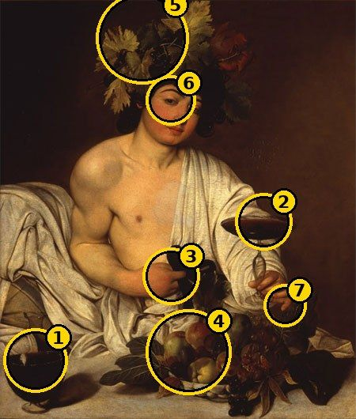

Hidden in the Frame · Uffizi Gallery, Florence
Bacchus
Caravaggio · c. 1596 · Oil on canvas · Room 90

The story
Caravaggio painted this as a young, still unknown painter in Rome for Cardinal Del Monte. It lay forgotten for centuries in the Uffizi storerooms and was only rediscovered in 1913. At first glance it is a pretty wine god. At second glance it is an invitation with an ulterior motive: he offers us something, but everything around him is already starting to rot.
Details to look for
- In the wine carafe at the bottom left, a tiny man at an easel is reflected: Caravaggio's self-portrait. It was only discovered during a restoration. The painter sits in the room with us, hidden in the wine, watching us while we watch his model. The wine in the carafe is still rippling, as if someone has just poured it.
- He holds the glass out to us – the invitation. But the wine sits at a slant, and rings form on its surface, as if his hand were trembling slightly. Is he already drunk? The glass is filled to the brim, almost too full: pleasure on the verge of spilling over.
- With his other hand he plucks at the black ribbon of his robe – as if about to untie it. Together with the glass, a double, ambiguous invitation: drink with me, and maybe more.
- From a distance the fruit bowl looks magnificent. Up close: the pomegranate has burst, the apple has worm holes, the leaves are spotted and wilted. The very thing so seductively offered is already rotting.
- The wreath of vine leaves is not fresh green but yellow and brown, some leaves already curling. It is autumn – harvest time, but also the beginning of the end.
- His face: heavy eyelids, flushed cheeks and ears, a slightly sleepy, languid look. This is no sublime god but a tipsy boy from the neighbourhood – probably a friend of Caravaggio's who sat as the model.
- Look at the hand on the glass: dirty fingernails. And the “divine” robe is no white cloth but a greyish bedsheet thrown around his body. Caravaggio openly shows: this is a costume in a studio, not Olympus.
What it says
Vanitas – everything beautiful passes. The god invites us to pleasure, but the fruit rots, the leaves wither, the hand trembles. Whoever accepts the invitation drinks from a glass in which the end is already floating. And the painter sits hidden in the carafe, watching.
Open the full guide – zoom, audio guide, German & Japanese →